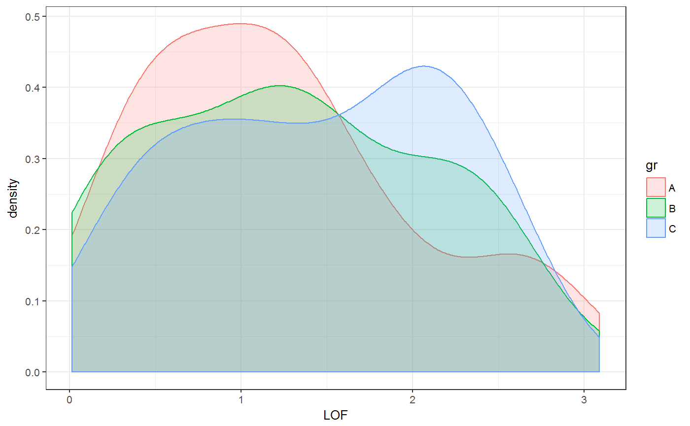

Calculate LOF (lack-of-fit), GOF (goodness-of-fit) and RMSE (root of mean squared error) for original and reconstructed spectra.
quality_of_fit(obj = NULL, fit) spFitEval(obj, fit)
| obj | The first set of (original) spectra. Either a matrix or a hyperSpec object. |
|---|---|
| fit | The second set of usually processed or reconstructed spectra, that will be compared to the first set. Either a matrix or a hyperSpec object. |
A dataframe with following parameters for each row in obj and fit:
$LOF - Lack of fit in percent (%):
$$\frac{\sum{(obj - fit)^2}}{\sum{obj^2}} \cdot 100\%$$
$GOF - Goodness of fit in percent (%): $$100\% - LOF$$
$RMSE - Root of mean squared error: $$\sqrt{(obj - fit)^2}$$
obj <- Spectra2 fit <- reconstructSp(Loadings2, Scores2) evaluation <- quality_of_fit(obj, fit) head(evaluation)#> LOF GOF RMSE #> 1 1.3515736 98.64843 3.3248162 #> 2 2.5413149 97.45869 4.8939196 #> 3 1.4385582 98.56144 2.9197208 #> 4 0.5363144 99.46369 1.0108425 #> 5 0.3715118 99.62849 0.7887728 #> 6 2.5388397 97.46116 4.1859020par(mfrow = c(3,1)) plot(density(evaluation$RMSE), main = "RMSE", col = 2)#> Error in plot.new(): figure margins too largeplot(density(evaluation$LOF), main = "Lack-of-fit")#> Error in plot.new(): figure margins too largeplot(density(evaluation$GOF), main = "Goodness-of-fit")#> Error in plot.new(): figure margins too largepar(mfrow = c(1,1)) # Density plot of LOF by group: DATA <- cbind(obj$.., evaluation) qplot(LOF, data = DATA, fill = gr, color = gr, geom = "density", alpha = I(.2))